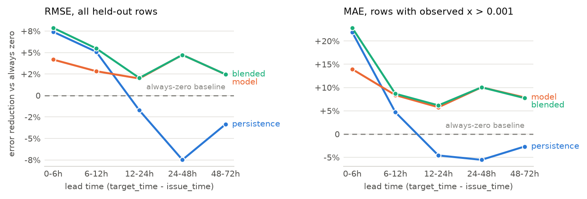

Huawei Tech Arena 2026 — Topic 2, AIDC Power-Supply Risk Forecasting, Phase 1
The system predicts x = customers_out / total_customers for five US counties, at
every lead time both tasks require, from archived ECMWF IFS HRES forecast runs plus the
observed EAGLE-I outage history available at each issue time. It is a single LightGBM
regressor with a Tweedie objective, one model covering both tasks, with lead time as an
explicit feature, blended toward a persistence forecast at short lead times where
persistence measurably wins. The submitted file contains 65,880 rows: 92 daily Task A
batches and 365 six-hourly Task B batches, five counties each, generated from 93 distinct
archived forecast runs.
The honest headline is that skill on this target is real but thin. Against an always-zero forecast, which is a strong baseline when 71.6 % of the target values are exactly zero, the model reduces held-out RMSE by 3.1 % and reduces MAE by 8.7 % on the rows that actually contain an outage. Most of that skill lives at short lead times and decays with horizon, which is what we would expect and what the lead-time curve in Section 7 shows. Two things dominate the model: which county the row belongs to, and the recent observed outage state. Weather contributes, but less than we assumed at the start of the week. We think the main reason is the size of the training set we were able to assemble, and Section 8 explains why it ended up as small as it did.
The guidelines let each team pick its own five counties and ask for the choice to be
justified. Our first instinct — rank all ~3,050 EAGLE-I counties by how often they report
an outage and take the top five — is a trap, and it is worth describing because the trap is
invisible in the output. Ranking by the fraction of 15-minute intervals with any nonzero
customers_out returns Harris County TX, Miami-Dade, and their peers at rates of
99.9 %. Those counties are not unusually fragile. They are unusually large, and in a county
with three million customers there is essentially always somebody off supply somewhere.
What that ranking recovers is population, not weather risk.
So we ranked instead on the fraction of intervals with x above 1 %, which requires an
event large enough to be visible at county scale. On top of that we required continuous
EAGLE-I coverage across the window (a reporting gap and a quiet county look identical in a
sparse event log), a denominator above 5,000 customers so that x is not dominated by
single-household noise, and diversity of weather regime across the final five rather than
five variations of the same climate.
The activity statistics come from January–August 2025 only, not the multi-year climatology we wanted: the forecast archive that supplies our features starts in March 2024 and the API budget did not stretch back further. That window at least stops before the evaluated one opens, so the selection never looks at a month it will be scored on.
| FIPS | County | State | Customers | Significant | Max x |
Regime, and why it is in the set |
|---|---|---|---|---|---|---|
| 72013 | Arecibo | Puerto Rico | 41,122 | 43.5 % | 1.000 | Tropical/Caribbean. A chronically fragile grid and by a wide margin the strongest signal anywhere in the dataset. |
| 37119 | Mecklenburg | North Carolina | 588,615 | 0.4 % | 0.023 | Piedmont/south-east. Hurricane remnants inland plus severe summer convection; Charlotte metro, so a large and well-reported denominator. |
| 54005 | Boone | West Virginia | 13,090 | 12.4 % | 0.343 | Appalachian interior. Ice storms and thunderstorm downbursts on wooded terrain; no maritime influence at all. |
| 26097 | Mackinac | Michigan | 8,757 | 12.2 % | 0.866 | Great Lakes. Winter storms and repeated near-total local outages — the highest-variance county of the five. |
| 22071 | Orleans | Louisiana | 212,936 | 0.9 % | 0.245 | Gulf Coast. Included deliberately despite a thin January–August signal: peak hurricane season falls inside the test window, and leaving the regime out because our proxy window misses it would be exactly the wrong inference. |
Orleans is the one selection that a pure ranking would not have made, and we would defend it as the most important of the five. September to November is the Gulf hurricane season. A selection procedure calibrated on January to August will systematically under-rate Gulf counties, because their season has not started yet in the data it looks at. Correcting for that by hand is not cherry-picking; refusing to correct for it would be.
One caveat on this table that we would rather state than bury. The ranking ran before we
found the denominator problem described in Section 3.4, so it used the
MCC.csv customer counts throughout, and Mecklenburg's was wrong by a factor of
20.9. That inflated every x we computed for the county and carried it into the
shortlist as the strongest mainland signal. Table 1 is recomputed on the corrected
denominators, and on those numbers Mecklenburg is the quietest of the five, not the
second loudest: its significant-event rate falls from 13.8 % to 0.4 %.
We kept it. The regime argument that put it on the shortlist is unaffected by the arithmetic error, and swapping it now would cost roughly 185 archived forecast calls — 93 to regenerate the submission at new coordinates and about 92 to give the replacement county training coverage — which at the observed daily quota is two of the three days left. Those calls are better spent on the seasonal training data described in Section 8. A team with more API budget should re-run the selection on corrected denominators; the selection code takes the reconciled table as its input already.
The competition materials point at the ORNL/OSTI record, which routes to a Globus endpoint
covering 2014–2022 and requiring an account. We lost most of a day believing that was the
only scriptable route. It is not: the complete 2014–2025 release, 17 files and about
11.6 GB, sits on figshare as article 24237376 (version 4, February 2026), and every annual
file is an anonymous HTTPS GET against ndownloader.figshare.com. Our downloader
resolves that file table from the figshare API rather than hard-coding it, and fetches
whichever years are asked for.
The annual files do not share a schema, and the drift is silent rather than fatal. Files
from 2014–2022 and 2025 use fips_code, county, state, customers_out,
run_start_time. The 2023 file calls the fourth column sum. The 2024 file adds a
sixth column, total_customers. A straightforward pd.concat across years
therefore produces a customers_out column that is entirely null for 2023 without
raising anything at all. Our loader normalizes headers through an explicit alias table
before concatenating, and raises on an unrecognized rename instead of degrading into
nulls.
EAGLE-I emits a row only when customers_out > 0. Everything else is implicitly
zero, and a model trained only on rows that exist would never see the negative class it
mostly has to predict. Preprocessing reindexes each county onto a complete 15-minute grid
across the period of interest and zero-fills the gaps, then computes x and clips it
to [0, 1]. The clip is not cosmetic: a handful of source rows report more customers out
than the county's modeled customer count, which is a known mismatch between the outage feed
and the customer-count file rather than a corrupt row to discard.
About 6.5 % of raw EAGLE-I rows carry an explicit null customers_out. That is not
the same as an absent row. An absent row means no outage; an explicit null means the
upstream ETL could not get a reading. Coercing nulls to zero would encode “we do not know”
as “confirmed no outage”, and would bias the model toward under-predicting risk during
exactly the periods when utility reporting is itself degraded — which is plausibly
correlated with the severe weather we are trying to predict. We treat the two cases
differently: a null in the target means the row is dropped, since there is nothing to
train or score against; a null in an autoregressive input is left as a null and handed
to LightGBM, which learns a default split direction for missing values. Imputing a
fabricated number there would be strictly worse.
The guidelines require that prediction-time weather be the forecast genuinely available at
the issue time, which rules out the Historical Forecast API (it stitches together only the
first hours of successive runs and so does not preserve lead-time-specific values) and
rules out observed reanalysis. We use Open-Meteo's Single Runs API with
models=ecmwf_ifs, which returns a specific archived initialization of IFS HRES at
9 km. That archive begins on 14 March 2024; every other model in the endpoint is archived
only from April 2026 and cannot overlap the test window. So IFS HRES is not a preference
here, it is the only option, and its start date is the hard boundary on how far back
training data can go.
The binding constraint on this project turned out to be the endpoint's rate limits. The published free-tier terms allow 10,000 calls per day, 5,000 per hour and 600 per minute. The Single Runs endpoint enforces three much tighter windows, none of them documented, and we discovered each one only by hitting it: a per-minute cap, a per-hour cap that needs roughly 62 minutes to clear, and a daily cap that in practice cut in somewhere around 110 to 130 calls. We found the daily one on the night of 19 August, mid-download, and it changed the shape of the project, because the same quota also pays for generating the submission. Two responses followed, both of which cost accuracy:
Every response is cached to a local SQLite store keyed on the request URL, so a given (coordinates, run, variables) request is fetched exactly once in the life of the project and every re-run of the pipeline is free. That cache is what makes retraining and regenerating the submission cost nothing, and it is why the download scripts are safe to kill and restart.
x is a ratio, so the customer count in its denominator multiplies every number we
predict. The organizers maintain their own fixed reference value and do not publish it. We
therefore have to pick a denominator and say clearly which one we picked.
The natural choice is MCC.csv, the modeled county customer file shipped with the
EAGLE-I release. On 20 August we checked it, summing it per state against coverage_history.csv, an independent file
from the same release that gives each state's total. MCC reproduces the state total to within a few percent almost everywhere. For
North Carolina it lands at 1.82 M against a published 5.30 M, missing about two thirds of
the state. Mecklenburg County, one of our five, carries 28,172 customers in MCC against
588,615 in EAGLE-I's own 2024 annual file. Every x we had computed for Mecklenburg,
in the training target and in the predictions, was inflated by a factor of 20.9.
The obvious fix — switch to the 2024 file's column — is wrong in the other direction elsewhere. Puerto Rico's state total agrees almost exactly between the two sources (1,485,262 against 1,485,249), but they allocate it differently across municipios: Arecibo is 41,122 in MCC and 191,803 in the 2024 file, against a resident population of roughly 87,000. The 2024 figure implies more electricity customers than people. Neither source is uniformly right, so a blanket swap trades a broken North Carolina for a broken Puerto Rico.
The rule we adopted is per state, not per county: for each state, take the county allocation
from whichever candidate source reproduces that state's independently published total more
closely, with ties going to MCC as the documented default. Per state, because the failure
mode we observed is a whole-state one, and because a per-county rule would have no
independent quantity to check itself against. Three states end up using the 2024 in-file
allocation (Kansas, North Carolina, Texas) and the other 49 keep MCC. The full table is in
data/processed/denominator_reconciliation.md. This still cannot be validated
against the organizers' reference, which is precisely why it is written down here.
Everything internal is naive UTC. EAGLE-I's run_start_time is parsed as UTC and
never localized; the Open-Meteo response comes back timezone-aware and is converted to naive
UTC at the point where the weather table is renamed for joining, because a tz-aware and a
tz-naive column merge into an empty result rather than an error. Output timestamps are
formatted as ISO 8601 with an explicit Z. FIPS codes are strings everywhere,
zero-padded to five characters at every load, which matters for Puerto Rico and for every
state whose code starts with a zero.
Spatial matching is the simplest thing that is defensible: each county is represented by its internal-point centroid from the 2025 US Census Gazetteer, and the forecast is requested at that single coordinate. Phase 1 targets counties rather than sites, so there is no site-to-county assignment to make; the approximation we are accepting is that one point represents a county's weather. For Mackinac County, which spans a lake shoreline, or for a large western county, that is a real simplification. Area-averaging over a grid of points per county would be better and costs a multiple of the API budget we did not have.
Fifty features in five groups. The design principle throughout is that a feature must be a
function only of data timestamped at or before the issue time, checked by a single shared
assertion (code/features/causality.py) rather than by scattered ad-hoc guards.
Raw forecast fields (12): 10 m wind speed, gusts and direction; precipitation, rain and snowfall; 2 m temperature and dew point; surface pressure; CAPE; cloud cover; freezing-level height.
Derived weather (11). Gust cubed, because wind loading on a conductor or a tree scales roughly with the cube of speed and the linear gust value compresses exactly the range that breaks things. Centered rolling gust maxima over ±3 h, ±6 h and ±12 h, which answer “is this hour inside a windstorm” rather than “is this hour windy”. Cumulative precipitation over the preceding 6 and 24 hours, as a proxy for soil saturation, since saturated ground plus gusts is what uproots trees. A wind×rain interaction term. Three-hour pressure change and one-hour gust jump for rate-of-change. All of these are computed strictly inside a single forecast trajectory, which is why a centered window is causally fine: those hours were disseminated together in one run, and causality here is run time against issue time, not neighboring hours within a forecast that has already arrived.
Climatological exceedance (12). Per-county p95, p99 and p99.9 of gusts and precipitation, plus boolean flags for exceeding each. These are what let one model serve both a Gulf county and an Appalachian one: 60 km/h means something different in each, and the exceedance flag says how unusual the value is locally instead of how large it is absolutely. The thresholds are fitted once on the training portion of the split only, saved with the model, and reapplied unchanged at prediction time. Recomputing them at serving time is a subtle and destructive bug: a single 62-hour forecast batch has a p95 gust roughly half the training p95 (26.4 against 54.4 km/h for Orleans), so the exceedance features would quietly mean something different in production than in training.
Autoregressive outage state (11). Observed x at issue time and at
−15 min, −30 min, −1 h, −2 h and −6 h; one- and
two-hour trends; the 24-hour rolling maximum; a flag for an outage in progress and the length
of the current run. The guidelines restrict only the weather input to what a forecast
could have provided; observed outage history up to issue time is realistic, since EAGLE-I and
the ODIN feed are near-real-time, and it is the main source of genuine sub-hourly skill for
Task B. IFS has no native 15-minute output, so the weather a Task B row sees is interpolated
from hourly values and carries no true sub-hourly information. Whatever timing skill Task B
has comes from this group.
Temporal and static (6). Hour of day and day of year as sine/cosine pairs, lead time in hours, county FIPS as a categorical, and the customer count.
One LightGBM regressor with objective=tweedie and
tweedie_variance_power=1.5, 500 trees, learning rate 0.05, 63 leaves, minimum 50
samples per leaf, 0.8 row and column subsampling. The Tweedie family is the natural fit for a
non-negative continuous target with a point mass at zero, which is what x is; it
handles the zero inflation inside the objective rather than by gluing two models together.
Both tasks are served by the same model with lead time as a feature, since a per-task split
would halve the training data for no structural reason.
The split is temporal and never random: training on rows before 1 May 2025, validating on everything after. A random split would put two rows from the same storm fifteen minutes apart on opposite sides and make every validation number meaningless. The held-out period is not an unrepresentatively calm stretch: 32.7 % of its rows are positive against 27.4 % in training.
Two decisions came out of bugs rather than design. First, there is no early stopping. An earlier version passed the validation set to LightGBM under the wrong keyword names, so no validation set was registered at all and the early-stopping callback fired after 25 of the configured 500 trees. The deployed model was that 25-tree stump: RMSE only slightly worse, but a maximum prediction of 0.012 against 0.086, so it had almost no dynamic range and could never have signaled a severe event. We fixed it by removing early stopping rather than by repairing the wiring, because stopping on the validation set and then reporting metrics on that same set would make every number in this report optimistic. Second, the model is saved as a bundle together with the fitted state its features depend on (the FIPS category ordering and the climatology thresholds), because re-deriving either at prediction time produces a model that silently answers a different question.
The lead-time curve showed persistence beating the model below about twelve hours and losing
badly beyond it, so a single predictor is the wrong shape for a submission whose two tasks sit
on opposite sides of that crossover. There is also a specific train/serve mismatch behind it.
During training, issue time and run time are the same instant, so the model's
lead_hours feature means both “how far ahead is the target” and “how stale are the
autoregressive features”. At serving time the two come apart: a Task B row asks for a
fifteen-minute-ahead prediction while carrying lead_hours between 12 and 36, because
that is the age of the forecast. The model learned to discount autoregressive features at long lead, and nothing in its input
says that this time they are minutes old. Persistence has no such confusion.
So we fit, on the held-out period, a weight per operational-lead bucket that minimizes RMSE between the model and a plain persistence forecast, and apply it at prediction time on the operational lead. RMSE rather than MAE, because on a target that is 71.6 % exact zeros, MAE is minimized by collapsing toward zero and a blend tuned on it would simply pick whichever component predicts less. The fitted weights on persistence are 0.75 below 6 h, 0.70 from 6 to 12 h, 0.10 from 12 to 24 h, and effectively zero beyond. Held-out RMSE in the 0–6 h bucket, which is the whole of Task B, improves by 3.9 %; overall RMSE across all buckets improves by 0.65 %.
In the training table 71.6 % of rows have x exactly zero, 28.4 % are nonzero, and
only 5.7 % exceed 0.001. The mean is 0.00154. Any error metric averaged over all rows is
therefore a statement about the zeros, and an always-zero forecast is a genuinely strong
competitor on MAE rather than a strawman. We address this in four places.
The objective absorbs the zero mass directly: Tweedie with a variance power of 1.5 is a compound Poisson-gamma, which is a distribution with an atom at zero and a continuous positive part, so the model is not being asked to fit a point mass with a Gaussian.
Evaluation is stratified rather than pooled. Every result in Section 7 is reported both over
all rows and restricted to rows where the observed x exceeds 0.001, and the always-zero
baseline appears in every table so that a reader can see how much of a number is skill and how
much is arithmetic on zeros. We also report maximum prediction per model, because a model that
looks competitive on average while never predicting above 1 % of customers out is useless for
the actual application.
The hurdle formulation in Section 7 attacks the imbalance structurally by splitting the question in two: a classifier for whether an event happens at all, and a severity regressor trained only on positives, so that the severity head never sees a zero and is not dragged toward one.
We planned a fourth measure, undersampling quiet periods with inverse-probability weights, and did not need it: the forecast archive already constrains the table to 92 run times rather than a row every fifteen minutes, so at 663k rows it trains in under a minute, and undersampling would have traded information away to buy speed we already had.
All numbers below are on the held-out period after 1 May 2025 (129,526 rows, of which 8,921
have observed x above 0.001), using a model that never saw a row from that period,
with thresholds and category encodings fitted only on the earlier portion.
| Predictor | MAE | RMSE | MAE, events | Max pred. | ΔRMSE vs full |
|---|---|---|---|---|---|
| always zero | 0.001475 | 0.016278 | 0.020788 | 0.000 | +3.11 % |
persistence (x at issue time) |
0.001903 | 0.016610 | 0.020981 | 0.147 | +5.21 % |
| per-county climatology | 0.002387 | 0.015986 | 0.020064 | 0.027 | +1.26 % |
| full model (LightGBM Tweedie) | 0.001485 | 0.015787 | 0.018974 | 0.059 | — |
| − raw forecast fields | 0.001535 | 0.015787 | 0.019386 | 0.099 | 0.00 % |
| − derived weather | 0.001532 | 0.015823 | 0.018970 | 0.055 | +0.23 % |
| − climatological exceedance | 0.001516 | 0.015775 | 0.019002 | 0.075 | −0.08 % |
| − autoregressive state | 0.001588 | 0.015904 | 0.019280 | 0.156 | +0.74 % |
| − temporal encodings | 0.001533 | 0.015815 | 0.019124 | 0.049 | +0.18 % |
| − static county features | 0.001513 | 0.015877 | 0.018890 | 0.062 | +0.57 % |
hurdle, τ = 0 |
0.001422 | 0.015948 | 0.019107 | 0.045 | +1.02 % |
hurdle, τ = 0.001 |
0.001563 | 0.015934 | 0.018969 | 0.076 | +0.93 % |
The full model beats all three baselines on RMSE and on event-restricted MAE, and loses to always-zero on pooled MAE by a hair. That last point is not a defect, it is what pooled MAE measures on a target that is three-quarters zeros: predicting a small positive number everywhere costs MAE on 122,000 zero rows to buy accuracy on 8,921 event rows. Per-county climatology is the strongest of the naive baselines on RMSE, which is itself informative — a large part of what any model can learn here is simply that some counties break more often than others.
The ablations are uncomfortable reading and we are not going to dress them up. Removing the autoregressive group costs the most (+0.74 % RMSE), removing the static county features costs +0.57 %, and removing all twelve raw forecast fields costs nothing measurable at all. Derived weather contributes +0.23 %, and the climatological exceedance features are, on this training set, worth slightly less than nothing. Feature importance tells the same story from the other side: county identity alone accounts for 47 % of total split gain.
| Feature | Gain share | Group |
|---|---|---|
fips_code | 47.1 % | static |
precip_cum_24h | 7.2 % | derived weather |
x_lag_1h | 6.3 % | autoregressive |
doy_sin | 5.7 % | temporal |
gust_roll_max_12h | 2.4 % | derived weather |
x_at_issue | 2.1 % | autoregressive |
precip_cum_6h | 2.0 % | derived weather |
Two readings are available and we cannot yet distinguish them with the data we have. One is that county-level outage rates are mostly a property of the utility and the vegetation, and weather adds less than intuition suggests at this spatial and temporal resolution. The other is that our training window — five and a half months of one year, containing no hurricane and no major landfall event — simply does not contain enough severe weather for the model to learn a weather response, so it settles for base rates. The derived features that do carry weight (24-hour cumulative precipitation, 12-hour rolling gust maximum) are the two that describe a sustained event rather than an instantaneous value, which is at least consistent with the second reading. Section 8 describes what we are doing about it.

Figure 1 is the curve the guidelines say scoring will look at. Persistence is the better forecast below twelve hours and is worse than no forecast at all beyond a day, which is the behavior a persistence forecast should have. The model is flat by comparison: it holds a small advantage over always-zero at every horizon and loses it slowly. The blend takes whichever is ahead, and the gain is concentrated exactly where Task B lives.
The hurdle model is the guidelines' class-imbalance question posed as an experiment: instead
of one Tweedie head, a binary classifier for P(x > τ) multiplied by a severity
head trained only on rows above τ. With τ = 0 it produces the best
pooled MAE of anything we tried, beating even always-zero, and with τ = 0.001 it
edges the Tweedie model on event MAE. Both lose to Tweedie on RMSE by about 1 %, and both
cost two models instead of one. We kept Tweedie for the submission on that basis, but the
margin is small enough that the choice is a preference for simplicity rather than a
demonstrated win.
This comparison took two attempts. The first version regressed severity on raw x
with a gamma objective (strictly positive target, no zero mass to model) and produced
predictions around 3.4×104 for a quantity bounded by 1. Gamma's log link over
labels spanning 1e−7 to 1 puts almost no curvature on the small ones and lets leaf values
run away; clipping to [0, 1] then turned that into a near-constant 0.24 everywhere, an MAE
of 0.24 against a target averaging 0.0015. Regressing log x under squared loss and
exponentiating bounds the quantity by construction. The residual bias is that
exp(E[log x]) is a geometric mean sitting below E[x], which we accept
rather than add a smearing correction we could not validate in the time left.
The training set is the limitation that matters, and it shrank at every stage of the week for reasons that were each individually defensible. A multi-year window became eighteen months once the IFS archive's March 2024 start was confirmed; the per-hour rate limit then cut the county sample from ~3,050 to 102 and the run cadence to every other day; the daily quota, found last, capped how many runs we could add. The model behind these numbers is trained on 1 January to 14 June 2025: 92 forecast runs across 102 counties in 40 states.
That window contains no Atlantic hurricane season, and the evaluated window is mostly hurricane season. It is the most obvious weakness in the submission and we are addressing it in the only way the quota permits: by downloading the September–November 2024 runs, which are seasonally matched to the test window and are the closest analogue available inside the archive. Ground truth for 2024 is already local, and the cached weather makes retraining and regenerating free in quota terms, so this is purely a question of how many calls arrive before the deadline.
Three smaller caveats. The climatological quantiles are fitted on a few months of a single year and are not a climate normal, so “p99 gust” here means “p99 of what this county saw in the training window”. Task B's weather is interpolated from hourly IFS output and contains no genuine sub-hourly information. And the denominator remains the largest uncontrolled risk in the submission: we predict a ratio whose divisor the organizers hold privately, and if their reference for a county differs from ours, our predictions for it are scaled wrong by exactly that factor however good the model is.
Every source used, with the license verified at the source on 21 August 2026 rather than assumed.
| Source | Use | License |
|---|---|---|
| EAGLE-I Recorded Electricity Outages 2014–2025 (Oak Ridge National Laboratory). Brelsford, Tennille, Myers, Chinthavali, Tansakul, Denman et al., figshare article 24237376 v4, 25 Feb 2026. doi:10.6084/m9.figshare.24237376.v4 | Ground-truth outage counts; MCC.csv and coverage_history.csv for
the denominator. |
CC BY 4.0, as returned by the figshare API for that article. |
|
Open-Meteo Single Runs API single-runs-api.open-meteo.com |
Delivery of archived ECMWF IFS HRES initializations, the sole weather input for both training and prediction. | CC BY 4.0 under the free non-commercial tier, per Open-Meteo's Terms of Use. Attribution: Weather data by Open-Meteo.com. |
| ECMWF IFS HRES open forecast data (originating model behind the above) | The forecast fields themselves. | CC BY 4.0 plus the ECMWF Terms of Use: “a subset of ECMWF real-time forecast data from the IFS and AIFS models is made available to the public free of charge … governed by the Creative Commons CC-BY-4.0 licence”, subject to attribution. |
|
US Census Bureau 2025 County Gazetteer 2025_Gaz_counties_national.txt |
County internal-point centroids, used as the forecast coordinate for each county. | US Government work, not subject to domestic copyright (17 U.S.C. §105); Census Bureau data are in the public domain. |
Code, execution order and expected runtimes are in README.md. The submitted
predictions.csv is regenerated end to end by python code/predict.py, which
also runs the format validator before writing.